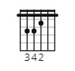
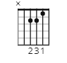
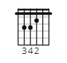
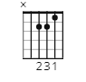
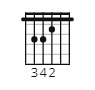
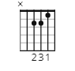

Lars Kilevold er en norsk musiker og låtskriver kjent for sitt bidrag til den norske popmusikken. Han ble født 1. januar 1961 i Oslo, Norge. Kilevold startet sin musikalske karriere på 1980-tallet og ble raskt anerkjent for sin evne til å lage fengende poplåter.
Han fikk sitt gjennombrudd med låten "Livet er for kjipt" i 1983, som ble en stor hit i Norge. Kilevold fortsatte å lage musikk og jobbe som artist gjennom 1980- og 1990-tallet, og han har bidratt med flere populære låter i løpet av karrieren.
Livet er for kjipt
Lars Kilevold
Akkorder:
C G F Am


Vers 1
C G FC
Sitter her aleine, har vært det lenge nå
Am F G
Sitter ensom kveld for kveld, og ingen ringer på
C G FC
Skulle gjerne hatt ei dame som kunne kose litt med meg
Am F CGC
men alt jeg hører er vaktmester'n, og han ække noe for meg.
Refreng
F Am FGAm
Livet er for kjipt, det regner hele året
F Am F C
Livet er for kjipt, aleine går jeg rundt
F Am FGAm
Livet er for kjipt, og ingen kan forstå det
F Am F C
Livet er for kjipt, det kanke være sunt
Vers 2
C G FC
Hvis jeg var stinn av daler, så sku jeg kjøpt en Chevrolet
Am F G
og rægga rundt I gatene og alle damer ville bli med
C G F
Men jeg ha`kke engang lappen, og jeg er stadig tom for gryn


 


